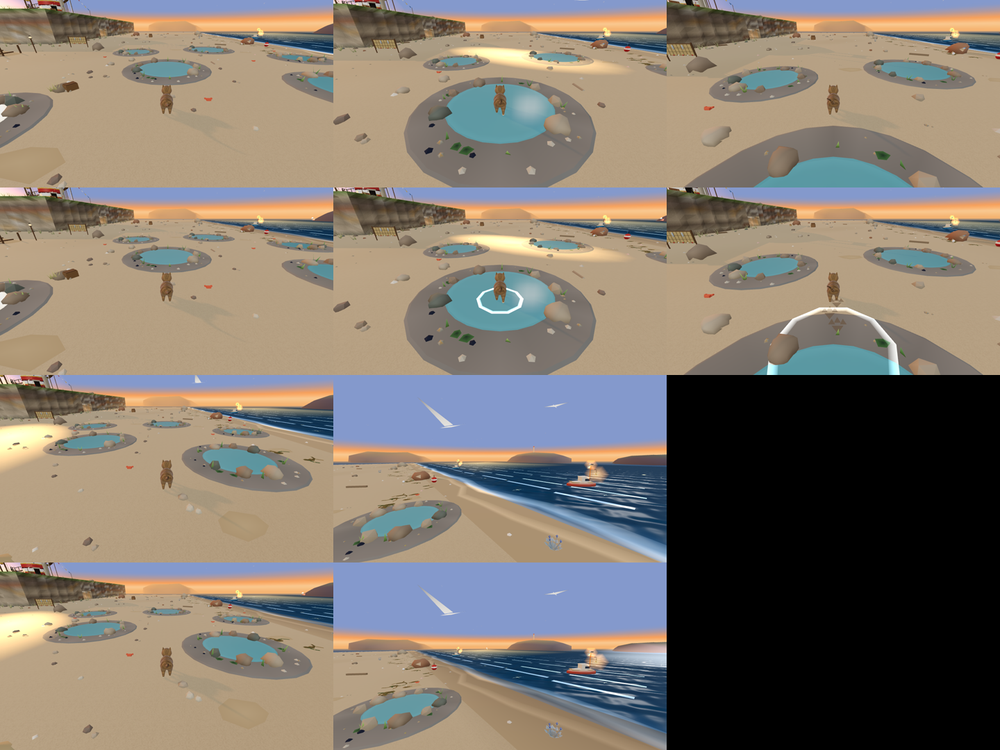

PLAY camera, tools/verify/verify-lighthouse.html (shots lb3_*). Each column: BEFORE (top) over AFTER (bottom). Row one: calm (pool-side), mid-reaction (rings spreading round her paws in the rock pool), and out of the pool (wet paw prints on the dry sand). Row two: running down the cove (the circling gulls are not in this frame), and the east coast after 40 s (darker wet band on the sand that the tide moves, a far ship's lights at the horizon, a faint mist bank at the right edge). Calm and run are the same by design: the reactions need her paws in the water.
